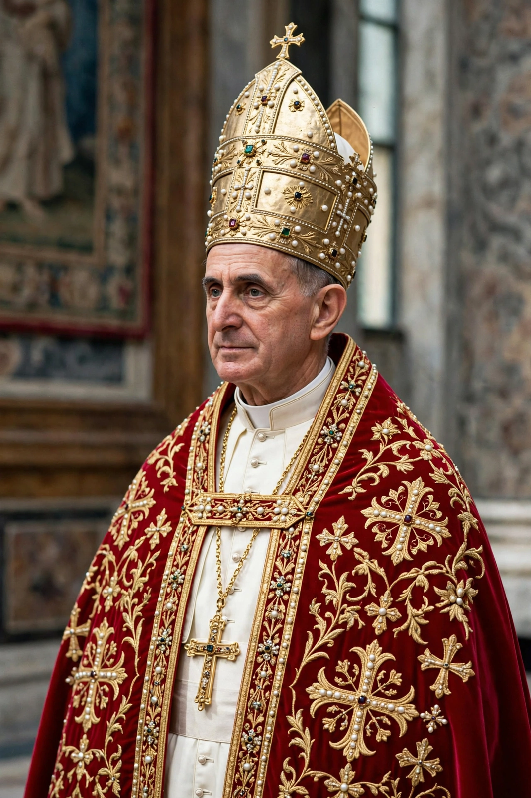

| Pope St Paul VI | |
 | |
| Born | Giovanni Battista Enrico Antonio Maria Montini, 26 September 1897, Concesio, Kingdom of Italy |
|---|---|
| Died | 6 August 1978 (aged 80), Castel Gandolfo, Italy |
| Papacy began | 21 June 1963 |
| Papacy ended | 6 August 1978 |
| Predecessor | John XXIII |
| Successor | John Paul I |
| Canonized | 14 October 2018 by Pope Francis |
Pope Paul VI (born Giovanni Battista Montini; 26 September 1897 – 6 August 1978) was head of the Catholic Church from 21 June 1963 to his death in 1978. He succeeded John XXIII, presided over the closing sessions of the Second Vatican Council, and implemented its reforms, including the revised Mass of 1969. He was canonised in 2018.
Montini was born in Concesio, Lombardy, the son of a prominent Catholic journalist and politician. Ordained in 1920, he spent three decades in the Vatican Secretariat of State, becoming Substitute (deputy) Secretary of State under Pius XII, and was appointed Archbishop of Milan in 1954, where he became known as the "archbishop of the workers" for his engagement with industrial labour. He was made a cardinal by John XXIII in 1958.
Elected in June 1963, Paul VI reconvened Vatican II and guided it to its conclusion in December 1965, balancing reformers and conservatives. He reformed the Roman Curia, internationalised the College of Cardinals, and became the first pope to travel extensively by aeroplane — visiting the Holy Land, India, the United States (addressing the United Nations in 1965), Colombia, Uganda and the Philippines, among others. His meeting with Ecumenical Patriarch Athenagoras I in Jerusalem in 1964 led to the mutual lifting of the excommunications of 1054 between Rome and Constantinople.
His encyclical Populorum progressio (1967) argued that development must serve the whole person and all peoples — "development is the new name for peace" — and remains a key text of Catholic social teaching. Humanae vitae (1968), reaffirming the Church's teaching against artificial contraception, proved the most controversial document of his reign and was widely dissented from in the West. His apostolic exhortation Evangelii nuntiandi (1975) is regarded as a landmark on evangelisation.
Paul VI died at Castel Gandolfo on 6 August 1978 and was succeeded by John Paul I. Long seen as a Hamlet-like figure caught between tradition and reform, his reputation rose with time; Pope Francis canonised him on 14 October 2018.